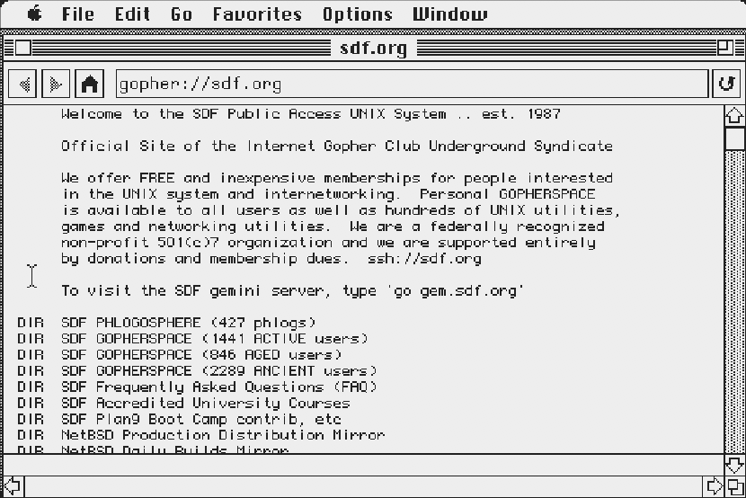
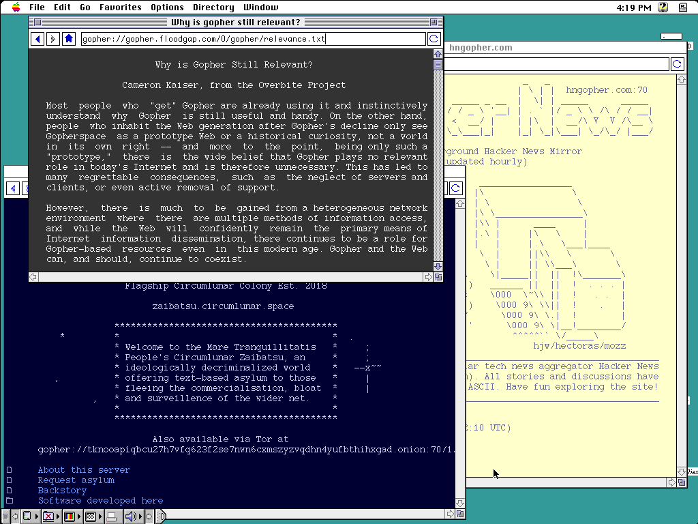

Introducing Geomys, a Gopher browser for the Macintosh you already own. Multi-window browsing, favorites, themes and Gopher+, on any 68000 Macintosh, from one 800K floppy.


It works. Gopher was made for machines like this: menus, text and files, delivered without ceremony. Geomys simply gives it a proper Macintosh face.
Open up to three Gopher windows at once and drag them anywhere. In 1986 this counts as multitasking. It still does.
One codebase, every classic Mac. Crisp 1-bit rendering on a Plus; a full palette on a Color Classic.
MultiFinder-aware with a proper SIZE resource on System 7, perfectly content under System 6.
Keep your favorite gopher holes one menu away. Add, rename, and revisit without typing a selector ever again.
Item attributes, alternate views, and file downloads straight to your hard disk. Or floppy. We don't judge.
Arrow through menus, jump with shortcuts, and leave the mouse for people who need to be shown where things are.
From phosphor green to Platinum grey. Monochrome themes run on every Macintosh, including the Plus; the colorful ones ask only for 256 colors. Eight more, from Dracula to Gruvbox, ship in the full build.
The minimal build fits a 1 MB machine. The full build, with three windows, every theme and Gopher+, is still smaller than this paragraph deserves.
No build toolchain required. Just download and run.
Prefer to roll your own? Build from source on GitHub with presets from minimal to full.